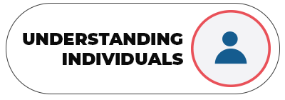
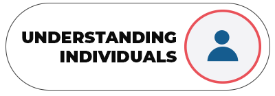
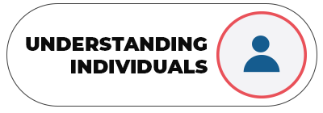

Leading Others with Agile Leadership Skills
Select a button to find out more about each leadership skill or take a skills assessment.
 



Select a button to find out more about each leadership skill or take a skills assessment.
